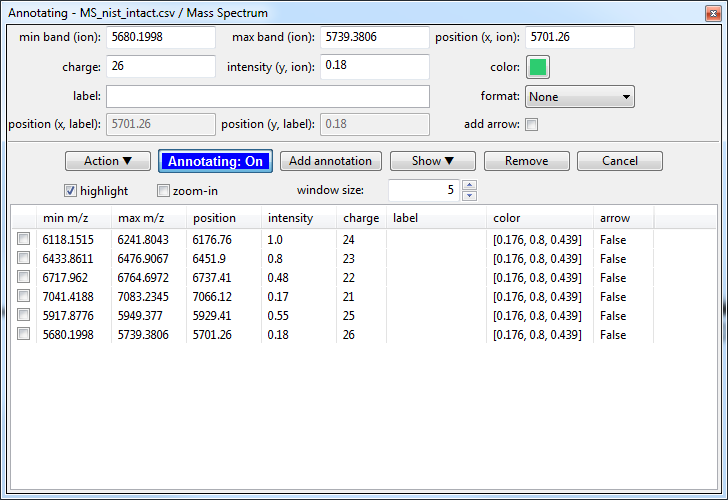
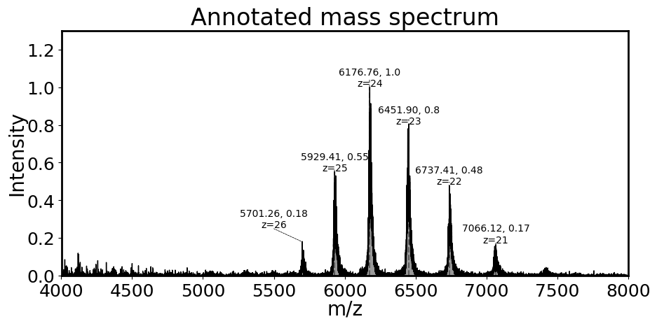
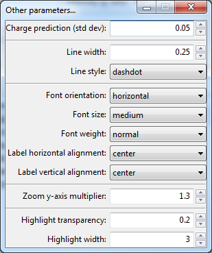
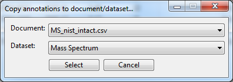

Annotating mass spectra¶
Since version 1.1.2 it is possible to annotate mass spectra with custom labels (e.g. charge state, label) and attached an arrow to highlight low-intensity species.
Video tutorial on how to annotate mass spectrum¶
Loading data¶
Please have a look at Loading Text files. In short, you either drag-and-drop the text file in the main window of ORIGAMI-ANALYSE or go to File -> Open MS Text file.
Example¶
In this example we will use a file provided with the ORIGAMI distribution. You can download MS file or you can find it in your ORIGAMI directory (example_data/text).
Annotating¶
There is a number of ways you can annote mass spectrum. The manual way involves opening an annotation panel and manually selecting peaks. You can also load annotations from a .csv file.
Opening annotation panel¶
Find the mass spectrum you would like to annotate in the Document Tree and right-click on it, then select Show annotations panel, a new window should show up:

Adding an annotation¶
- Click on the Annotating: Off button so it switches to Annotating: On.
- Move your mouse to the mass spectrum window and hold CTRL on your keyboard while also dragging mouse over a peak (like during data extraction).
- When you release the mouse, a number of values will be added in the annotation panel (min/max band, position x, charge, intensity, etc) - all of which can be changed. When you are happy click on the Add annotation button.
- The annotation should appear in a list below. Repeat till you are fnished.
Editing an annotation¶
- Select a annotation in the list below.
- Change any value.
- Click on the Add annotation button.
Adding arrow to annotation¶
- Select a annotation in the list below.
- Uncheck the add arrow checkbox.
- Adjust values of position (x, label) and position (y, label)
- Click on the Add annotation button.
Showing all annotations¶
- Click on the Show button and select appropriate option (e.g. Show m/z, intensity, charge).
- All annotations should be shown on the mass spectrum.

Customising annotations¶
You can adjust several parameters (annotation color, arrow line thickness, label size, etc) in the Customise annotations panel. You can open it by clicking on the Action button and selecting Customise other settings.... A new panel should open.

Note: You will have to replot annotations as these settings do not automatically update.
Duplicating annotations¶
Sometimes you might have more than one mass spectrum a document that has a lot of the same peaks. You could manually re-add these, but there is a quicker way.
- Find the mass spectrum with annotations and right-click on it. Select Duplicate annotations... option.
- A new window will appear where you can select another document and mass spectrum to which annotations should be copied.
- Once you have selected, click Select and see if they have been copied.
- One thing to remember is that the intensity of the peaks in different peaks will vary so you have to fix the intensity of annotation label. To do this, open the annotation panel for newly copied annotations (Document Tree -> Show annotations panel...) and click on the Action button. Once there, select Fix intensity option.
